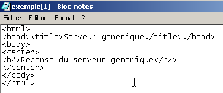

9. Quellcode von Programmen
9.1. Der generische Client TCP
Viele Dienste, die zu Beginn des Internets entstanden sind, funktionieren nach dem zuvor behandelten Echo-Server-Modell: Der Austausch zwischen Client und Server erfolgt über den Austausch von Textzeilen. Wir werden einen generischen TCP-Client schreiben, der wie folgt gestartet wird: java cltTCPgenerique Server Port
Dieser Client TCP stellt eine Verbindung zum Port port des Servers serveur her. Anschließend erstellt er zwei Threads:
- einen Thread, der die über die Tastatur eingegebenen Befehle liest und an den Server sendet
- ein Thread, der die Antworten des Servers liest und auf dem Bildschirm anzeigt
Warum zwei Threads? Jeder TCP-IP-Dienst hat sein eigenes Protokoll, und manchmal treten folgende Situationen auf:
- Der Client muss mehrere Textzeilen senden, bevor er eine Antwort erhält
- Die Antwort eines Servers kann mehrere Textzeilen umfassen
Daher ist die Schleife „Senden einer einzelnen Zeile an den Server – Empfangen einer einzelnen Zeile vom Server“ nicht immer geeignet. Wir erstellen daher zwei voneinander getrennte Schleifen:
- eine Schleife zum Einlesen der über die Tastatur eingegebenen Befehle, die an den Server gesendet werden sollen. Der Benutzer signalisiert das Ende der Befehle mit dem Schlüsselwort fin.
- eine Schleife zum Empfangen und Anzeigen der Antworten des Servers. Dabei handelt es sich um eine Endlosschleife, die nur durch das Schließen der Netzwerkverbindung durch den Server oder durch den Benutzer über die Tastatur unterbrochen wird, indem dieser den Befehl fin eingibt.
Um diese beiden Schleifen voneinander zu trennen, benötigen wir zwei unabhängige Threads. Betrachten wir ein Ausführungsbeispiel, bei dem sich unser generischer TCP-Client mit einem Dienst namens SMTP (SendMail Transfer Protocol) verbindet. Dieser Dienst ist für die Weiterleitung von E-Mails an ihre Empfänger zuständig. Er läuft auf Port 25 und verwendet ein Dialogprotokoll, bei dem Textzeilen ausgetauscht werden.
Dos>java clientTCPgenerique istia.univ-angers.fr 25
Commandes :
<-- 220 istia.univ-angers.fr ESMTP Sendmail 8.11.6/8.9.3; Mon, 13 May 2002 08:37:26 +0200
help
<-- 502 5.3.0 Sendmail 8.11.6 -- HELP not implemented
mail from: machin@univ-angers.fr
<-- 250 2.1.0 machin@univ-angers.fr... Sender ok
rcpt to: serge.tahe@istia.univ-angers.fr
<-- 250 2.1.5 serge.tahe@istia.univ-angers.fr... Recipient ok
data
<-- 354 Enter mail, end with "." on a line by itself
Subject: test
ligne1
ligne2
ligne3
.
<-- 250 2.0.0 g4D6bks25951 Message accepted for delivery
quit
<-- 221 2.0.0 istia.univ-angers.fr closing connection
[fin du thread de lecture des réponses du serveur]
fin
[fin du thread d'envoi des commandes au serveur]
Erläutern wir diesen Client-Server-Austausch:
- Der Dienst SMTP sendet eine Begrüßungsnachricht, wenn sich ein Client bei ihm anmeldet:
- Einige Dienste verfügen über den Befehl help, der Hinweise zu den mit dem Dienst verwendbaren Befehlen gibt. Hier ist dies nicht der Fall. Die im Beispiel verwendeten Befehle SMTP lauten wie folgt:
- mail from: expéditeur, um die E-Mail-Adresse des Absenders der Nachricht anzugeben
- rcpt to: destinataire, um die E-Mail-Adresse des Empfängers der Nachricht anzugeben. Bei mehreren Empfängern wird der Befehl „rcpt to:“ so oft wie nötig für jeden einzelnen Empfänger wiederholt.
- data, das dem Server SMTP signalisiert, dass die Nachricht gesendet wird. Wie in der Antwort des Servers angegeben, handelt es sich dabei um eine Folge von Zeilen, die mit einer Zeile endet, die ausschließlich das Zeichen „.“ enthält. Eine Nachricht kann Kopfzeilen enthalten, die durch eine Leerzeile vom Nachrichtentext getrennt sind. In unserem Beispiel haben wir einen Betreff mit dem Schlüsselwort Subject: angegeben
- Sobald die Nachricht gesendet wurde, kann man dem Server mit dem Befehl „quit“ mitteilen, dass man fertig ist. Der Server schließt daraufhin die Netzwerkverbindung. Der Lesethread kann dieses Ereignis erkennen und sich beenden.
- Der Benutzer gibt dann „fin“ über die Tastatur ein, um auch den Thread zum Lesen der über die Tastatur eingegebenen Befehle zu beenden.
Wenn man die empfangene E-Mail überprüft, sieht man Folgendes (Outlook):

Es ist zu beachten, dass der Dienst „SMTP“ nicht erkennen kann, ob ein Absender gültig ist oder nicht. Daher darf man dem Feld „from“ einer Nachricht niemals vertrauen. In diesem Fall existierte der Absender „machin@univ-angers.fr“ nicht.
Dieser generische TCP-Client ermöglicht es uns, das Kommunikationsprotokoll von Internetdiensten zu ermitteln und auf dieser Grundlage spezialisierte Klassen für Clients dieser Dienste zu erstellen. Sehen wir uns das Kommunikationsprotokoll des Dienstes POP (Post Office Protocol) an, mit dem man seine auf einem Server gespeicherten E-Mails abrufen kann. Er läuft auf Port 110.
Dos> java clientTCPgenerique istia.univ-angers.fr 110
Commandes :
<-- +OK Qpopper (version 4.0.3) at istia.univ-angers.fr starting.
help
<-- -ERR Unknown command: "help".
user st
<-- +OK Password required for st.
pass monpassword
<-- +OK st has 157 visible messages (0 hidden) in 11755927 octets.
list
<-- +OK 157 visible messages (11755927 octets)
<-- 1 892847
<-- 2 171661
...
<-- 156 2843
<-- 157 2796
<-- .
retr 157
<-- +OK 2796 octets
<-- Received: from lagaffe.univ-angers.fr (lagaffe.univ-angers.fr [193.49.144.1])
<-- by istia.univ-angers.fr (8.11.6/8.9.3) with ESMTP id g4D6wZs26600;
<-- Mon, 13 May 2002 08:58:35 +0200
<-- Received: from jaume ([193.49.146.242])
<-- by lagaffe.univ-angers.fr (8.11.1/8.11.2/GeO20000215) with SMTP id g4D6wSd37691;
<-- Mon, 13 May 2002 08:58:28 +0200 (CEST)
...
<-- ------------------------------------------------------------------------
<-- NOC-RENATER2 Tl. : 0800 77 47 95
<-- Fax : (+33) 01 40 78 64 00 , Email : noc-r2@cssi.renater.fr
<-- ------------------------------------------------------------------------
<--
<-- .
quit
<-- +OK Pop server at istia.univ-angers.fr signing off.
[fin du thread de lecture des réponses du serveur]
fin
[fin du thread d'envoi des commandes au serveur]
Die wichtigsten Befehle lauten wie folgt:
- user login, wobei man seinen Benutzernamen auf dem Rechner angibt, auf dem sich die E-Mails befinden
- pass password, wobei man das zum vorherigen Login gehörende Passwort angibt
- list, um eine Liste der Nachrichten in Form von Nummer und Größe in Byte zu erhalten
- retr i, um die Nachricht Nr. i zu lesen
- quit, um die Verbindung zu beenden.
Sehen wir uns nun das Dialogprotokoll zwischen einem Client und einem Webserver an, der in der Regel auf Port 80 läuft:
Dos> java clientTCPgenerique istia.univ-angers.fr 80
Commandes :
GET /index.html HTTP/1.0
<-- HTTP/1.1 200 OK
<-- Date: Mon, 13 May 2002 07:30:58 GMT
<-- Server: Apache/1.3.12 (Unix) (Red Hat/Linux) PHP/3.0.15 mod_perl/1.21
<-- Last-Modified: Wed, 06 Feb 2002 09:00:58 GMT
<-- ETag: "23432-2bf3-3c60f0ca"
<-- Accept-Ranges: bytes
<-- Content-Length: 11251
<-- Connection: close
<-- Content-Type: text/html
<--
<-- <html>
<--
<-- <head>
<-- <meta http-equiv="Content-Type"
<-- content="text/html; charset=iso-8859-1">
<-- <meta name="GENERATOR" content="Microsoft FrontPage Express 2.0">
<-- <title>Bienvenue a l'ISTIA - Universite d'Angers</title>
<-- </head>
....
<-- face="Verdana"> - Dernire mise jour le <b>10 janvier 2002</b></font></p>
<-- </body>
<-- </html>
<--
[fin du thread de lecture des réponses du serveur]
fin
[fin du thread d'envoi des commandes au serveur]
Ein Webclient sendet seine Befehle nach folgendem Schema an den Server:
Erst nach Erhalt der leeren Zeile antwortet der Webserver. In diesem Beispiel haben wir nur einen Befehl verwendet:
der den Server nach URL /index.html abfragt und angibt, dass er mit dem Protokoll HTTP Version 1.0 arbeitet. Die aktuellste Version dieses Protokolls ist 1.1. Das Beispiel zeigt, dass der Server mit dem Inhalt der Datei index.html geantwortet und anschließend die Verbindung geschlossen hat, da der Thread zum Lesen der Antworten beendet wurde. Vor dem Senden des Inhalts der Datei index.html hat der Webserver eine Reihe von Headern gesendet, die mit einer Leerzeile endeten:
<-- HTTP/1.1 200 OK
<-- Date: Mon, 13 May 2002 07:30:58 GMT
<-- Server: Apache/1.3.12 (Unix) (Red Hat/Linux) PHP/3.0.15 mod_perl/1.21
<-- Last-Modified: Wed, 06 Feb 2002 09:00:58 GMT
<-- ETag: "23432-2bf3-3c60f0ca"
<-- Accept-Ranges: bytes
<-- Content-Length: 11251
<-- Connection: close
<-- Content-Type: text/html
<--
<-- <html>
Die Zeile <html> ist die erste Zeile der Datei /index.html. Das Vorstehende wird als HTTP-Header (HyperText-Übertragungsprotokoll) bezeichnet. Wir werden hier nicht näher auf diese Header eingehen, aber man sollte bedenken, dass unser generischer Client Zugriff darauf gewährt, was zum Verständnis hilfreich sein kann. Die erste Zeile zum Beispiel:
gibt an, dass der angesprochene Webserver das Protokoll HTTP/1.1 versteht und die angeforderte Datei tatsächlich gefunden hat (200 OK), wobei 200 ein HTTP-Antwortcode ist. Die Zeilen
teilen dem Client mit, dass er 11251 Bytes erhalten wird, die den Text HTML (HyperText Markup Language) darstellen, und dass die Verbindung nach Abschluss der Übertragung geschlossen wird.
Wir haben hier also einen sehr praktischen TCP-Client. Er kann zweifellos weniger als das zuvor verwendete Programm telnet, aber es war interessant, ihn selbst zu schreiben. Das Programm für den generischen TCP-Client lautet wie folgt:
// importierte Pakete
import java.io.*;
import java.net.*;
public class clientTCPgenerique{
// erhält als Parameter die Merkmale eines Dienstes in der Form
// Server-Port
// stellt eine Verbindung zum Dienst her
// erstellt einen Thread zum Einlesen von Befehlen, die über die Tastatur eingegeben werden
// Diese werden an den Server gesendet
// erstellt einen Thread zum Lesen der Antworten vom Server
// diese werden auf dem Bildschirm angezeigt
// Das Ganze endet mit dem über die Tastatur eingegebenen Befehl „fin“
// Instanzvariable
private static Socket client;
public static void main(String[] args){
// Syntax
final String syntaxe="pg serveur port";
// Anzahl der Argumente
if(args.length != 2)
erreur(syntaxe,1);
// Hier wird der Name des Servers notiert
String serveur=args[0];
// Der Port muss eine ganze Zahl > 0 sein
int port=0;
boolean erreurPort=false;
Exception E=null;
try{
port=Integer.parseInt(args[1]);
}catch(Exception e){
E=e;
erreurPort=true;
}
erreurPort=erreurPort || port <=0;
if(erreurPort)
erreur(syntaxe+"\n"+"Port incorrect ("+E+")",2);
client=null;
// Es können Probleme auftreten
try{
// Verbindung zum Dienst herstellen
client=new Socket(serveur,port);
}catch(Exception ex){
// Fehler
erreur("Impossible de se connecter au service ("+ serveur
+","+port+"), erreur : "+ex.getMessage(),3);
// Ende
return;
}//catch
// Lese-/Schreib-Threads werden erstellt
new ClientSend(client).start();
new ClientReceive(client).start();
// Ende des Haupt-Threads
return;
}// main
// Anzeige der Fehler
public static void erreur(String msg, int exitCode){
// Fehleranzeige
System.err.println(msg);
// Beenden mit Fehler
System.exit(exitCode);
}//Fehler
}//Klasse
class ClientSend extends Thread {
// Klasse zum Lesen von über die Tastatur eingegebenen Befehlen
// und diese über einen als Parameter übergebenen TCP-Client an einen Server zu senden
private Socket client; // der TCP-Client
// Konstruktor
public ClientSend(Socket client){
// Hier wird der TCP-Client angegeben
this.client=client;
}//Konstruktor
// Run-Methode des Threads
public void run(){
// lokale Daten
PrintWriter OUT=null; // Netzwerk-Schreibstrom
BufferedReader IN=null; // Tastatur-Datenstrom
String commande=null; // von der Tastatur gelesener Befehl
// Fehlerbehandlung
try{
// Erstellung des Netzwerk-Schreibstroms
OUT=new PrintWriter(client.getOutputStream(),true);
// Erstellung des Tastatureingabestroms
IN=new BufferedReader(new InputStreamReader(System.in));
// Schleife für die Eingabe und das Senden von Befehlen
System.out.println("Commandes : ");
while(true){
// Einlesen des über die Tastatur eingegebenen Befehls
commande=IN.readLine().trim();
// Fertig?
if (commande.toLowerCase().equals("fin")) break;
// Befehl an den Server senden
OUT.println(commande);
// Nächster Befehl
}//while
}catch(Exception ex){
// Fehler
System.err.println("Envoi : L'erreur suivante s'est produite : " + ex.getMessage());
}//catch
// Ende – Streams werden geschlossen
try{
OUT.close();client.close();
}catch(Exception ex){}
// das Ende des Threads wird gemeldet
System.out.println("[Envoi : fin du thread d'envoi des commandes au serveur]");
}//run
}//Klasse
class ClientReceive extends Thread{
// Klasse, die für das Einlesen der Textzeilen zuständig ist, die für einen
// als Parameter übergebenen TCP-Client bestimmt sind
private Socket client; // der TCP-Client
// Konstruktor
public ClientReceive(Socket client){
// Der TCP-Client wird notiert
this.client=client;
}//Konstruktor
// Run-Methode des Threads
public void run(){
// lokale Daten
BufferedReader IN=null; // Netzwerk-Lese-Stream
String réponse=null; // Serverantwort
// Fehlerbehandlung
try{
// Erstellung des Netzwerk-Lese-Streams
IN=new BufferedReader(new InputStreamReader(client.getInputStream()));
// Schleife zum Einlesen der Textzeilen aus dem Datenstrom IN
while(true){
// Lesen des Netzwerkstroms
réponse=IN.readLine();
// Datenstrom geschlossen?
if(réponse==null) break;
// Anzeige
System.out.println("<-- "+réponse);
}//while
}catch(Exception ex){
// Fehler
System.err.println("Réception : L'erreur suivante s'est produite : " + ex.getMessage());
}//catch
// Ende – die Datenströme werden geschlossen
try{
IN.close();client.close();
}catch(Exception ex){}
// das Ende des Threads wird gemeldet
System.out.println("[Réception : fin du thread de lecture des réponses du serveur]");
}//run
}//Klasse
9.2. Der generische TCP-Server
Nun wenden wir uns einem Server zu,
- , der die von seinen Clients gesendeten Befehle auf dem Bildschirm anzeigt
- und ihnen als Antwort die Textzeilen zurücksendet, die ein Benutzer über die Tastatur eingegeben hat. Letzterer fungiert also als Server.
Das Programm wird gestartet mit: java serveurTCPgenerique portEcoute, wobei portEcoute der Port ist, über den sich die Clients verbinden müssen. Die Bedienung der Clients wird von zwei Threads übernommen:
- ein Thread, der sich ausschließlich dem Einlesen der vom Client gesendeten Textzeilen widmet
- ein Thread, der sich ausschließlich dem Einlesen der vom Benutzer über die Tastatur eingegebenen Antworten widmet. Dieser signalisiert mit dem Befehl „fin“, dass er die Verbindung zum Client beendet.
Der Server erstellt zwei Threads pro Client. Bei n Clients sind somit 2n Threads gleichzeitig aktiv. Der Server selbst wird niemals beendet, es sei denn, der Benutzer drückt die Tastenkombination Strg+C. Sehen wir uns einige Beispiele an.
Der Server wird auf Port 100 gestartet und wir verwenden den generischen Client, um mit ihm zu kommunizieren. Das Client-Fenster sieht wie folgt aus:
E:\data\serge\MSNET\c#\Netzwerk\generischer TCP-Client> java clientTCPgenerique localhost 100
Commandes :
commande 1 du client 1
<-- réponse 1 au client 1
commande 2 du client 1
<-- réponse 2 au client 1
fin
L'erreur suivante s'est produite : Impossible de lire les données de la connexion de transport.
[fin du thread de lecture des réponses du serveur]
[fin du thread d'envoi des commandes au serveur]
Die Zeilen, die mit <-- beginnen, sind vom Server an den Client gesendet worden, die anderen vom Client an den Server. Das Serverfenster sieht wie folgt aus:
Dos> java serveurTCPgenerique 100
Serveur générique lancé sur le port 100
Thread de lecture des réponses du serveur au client 1 lancé
1 : Thread de lecture des demandes du client 1 lancé
<-- commande 1 du client 1
réponse 1 au client 1
1 : <-- commande 2 du client 1
réponse 2 au client 1
1 : [fin du Thread de lecture des demandes du client 1]
fin
[fin du Thread de lecture des réponses du serveur au client 1]
Die Zeilen, die mit <-- beginnen, sind diejenigen, die vom Client an den Server gesendet wurden. Die Zeilen N: sind die Zeilen, die vom Server an den Client Nr. N gesendet wurden. Der oben genannte Server ist noch aktiv, während Client 1 beendet wurde. Wir starten einen zweiten Client für denselben Server:
Dos> java clientTCPgenerique localhost 100
Commandes :
commande 3 du client 2
<-- réponse 3 au client 2
fin
L'erreur suivante s'est produite : Impossible de lire les données de la connexion de transport.
[fin du thread de lecture des réponses du serveur]
[fin du thread d'envoi des commandes au serveur]
Das Serverfenster sieht dann wie folgt aus:
Dos> java serveurTCPgenerique 100
Serveur générique lancé sur le port 100
Thread de lecture des réponses du serveur au client 1 lancé
1 : Thread de lecture des demandes du client 1 lancé
<-- commande 1 du client 1
réponse 1 au client 1
1 : <-- commande 2 du client 1
réponse 2 au client 1
1 : [fin du Thread de lecture des demandes du client 1]
fin
[fin du Thread de lecture des réponses du serveur au client 1]
Thread de lecture des réponses du serveur au client 2 lancé
2 : Thread de lecture des demandes du client 2 lancé
<-- commande 3 du client 2
réponse 3 au client 2
2 : [fin du Thread de lecture des demandes du client 2]
fin
[fin du Thread de lecture des réponses du serveur au client 2]
^C
Simulieren wir nun einen Webserver, indem wir unseren generischen Server auf Port 88 starten:
Dos> java serveurTCPgenerique 88
Serveur générique lancé sur le port 88
Öffnen wir nun einen Browser und rufen wir die Seite URL http://localhost:88/exemple.html auf. Der Browser stellt dann eine Verbindung zum Port 88 des Rechners localhost her und fordert anschließend die Seite /exemple.html an:

Sehen wir uns nun das Fenster unseres Servers an:
Dos>java serveurTCPgenerique 88
Serveur générique lancé sur le port 88
Thread de lecture des réponses du serveur au client 2 lancé
2 : Thread de lecture des demandes du client 2 lancé
<-- GET /exemple.html HTTP/1.1
<-- Accept: image/gif, image/x-xbitmap, image/jpeg, image/pjpeg, application/msword, */*
<-- Accept-Language: fr
<-- Accept-Encoding: gzip, deflate
<-- User-Agent: Mozilla/4.0 (compatible; MSIE 6.0; Windows NT 5.0; .NET CLR 1.0.3705; .NET CLR 1.0.2
914)
<-- Host: localhost:88
<-- Connection: Keep-Alive
<--
So entdecken wir die vom Browser gesendeten Header HTTP. Dies ermöglicht es uns, das Protokoll HTTP nach und nach zu entschlüsseln. In einem früheren Beispiel hatten wir einen Web-Client erstellt, der lediglich den Befehl GET sendete. Das hatte ausgereicht. Hier sehen wir, dass der Browser weitere Informationen an den Server sendet. Diese dienen dazu, dem Server mitzuteilen, um welche Art von Client es sich handelt. Wir sehen auch, dass die Header HTTP mit einer leeren Zeile enden.
Erstellen wir eine Antwort für unseren Client. Der Benutzer an der Tastatur ist hier der eigentliche Server und kann die Antwort manuell erstellen. Erinnern wir uns an die Antwort eines Webservers aus einem früheren Beispiel:
<-- HTTP/1.1 200 OK
<-- Date: Mon, 13 May 2002 07:30:58 GMT
<-- Server: Apache/1.3.12 (Unix) (Red Hat/Linux) PHP/3.0.15 mod_perl/1.21
<-- Last-Modified: Wed, 06 Feb 2002 09:00:58 GMT
<-- ETag: "23432-2bf3-3c60f0ca"
<-- Accept-Ranges: bytes
<-- Content-Length: 11251
<-- Connection: close
<-- Content-Type: text/html
<--
<-- <html>
Versuchen wir, eine ähnliche Antwort zu geben:
...
<-- Host: localhost:88
<-- Connection: Keep-Alive
<--
2 : HTTP/1.1 200 OK
2 : Server: serveur tcp generique
2 : Connection: close
2 : Content-Type: text/html
2 :
2 : <html>
2 : <head><title>Serveur generique</title></head>
2 : <body>
2 : <center>
2 : <h2>Reponse du serveur generique</h2>
2 : </center>
2 : </body>
2 : </html>
2 : fin
L'erreur suivante s'est produite : Impossible de lire les données de la connexion de transport.
[fin du Thread de lecture des demandes du client 2]
[fin du Thread de lecture des réponses du serveur au client 2]
Zeilen, die mit „2:“ beginnen, werden vom Server an Client Nr. 2 gesendet. Der Befehl fin beendet die Verbindung vom Server zum Client. Wir haben uns in unserer Antwort auf die folgenden HTTP-Header beschränkt:
HTTP/1.1 200 OK
2 : Server: serveur tcp generique
2 : Connection: close
2 : Content-Type: text/html
2 :
Wir geben die Größe der Datei, die wir senden werden (Content-Length), nicht an, sondern geben lediglich an, dass wir die Verbindung (Connection: close) nach dem Senden dieser Datei schließen werden. Das reicht für den Browser aus. Sobald der Browser sieht, dass die Verbindung geschlossen wurde, weiß er, dass die Antwort des Servers abgeschlossen ist, und zeigt die Seite HTML an, die ihm gesendet wurde. Diese lautet wie folgt:
2 : <html>
2 : <head><title>Serveur generique</title></head>
2 : <body>
2 : <center>
2 : <h2>Reponse du serveur generique</h2>
2 : </center>
2 : </body>
2 : </html>
Anschließend beendet der Benutzer die Verbindung zum Client, indem er den Befehl fin eingibt. Der Browser erkennt daraufhin, dass die Antwort des Servers vollständig ist, und kann sie nun anzeigen:

Wenn man oben den Befehl View/Source eingibt, um zu sehen, was der Browser empfangen hat, erhält man:

Das ist genau das, was vom generischen Server gesendet wurde.
Der Code des generischen TCP-Servers lautet wie folgt:
// Pakete
import java.io.*;
import java.net.*;
public class serveurTCPgenerique{
// Hauptprogramm
public static void main (String[] args){
// empfängt über den Listening-Port Anfragen von Clients
// erstellt einen Thread zum Lesen der Client-Anfragen
// Diese werden auf dem Bildschirm angezeigt
// erstellt einen Thread zum Lesen von über die Tastatur eingegebenen Befehlen
// diese werden als Antwort an den Client gesendet
// Der gesamte Vorgang endet mit dem über die Tastatur eingegebenen Befehl „end“
final String syntaxe="Syntaxe : pg port";
// Instanzvariable
// Gibt es ein Argument?
if(args.length != 1)
erreur(syntaxe,1);
// Der Port muss eine ganze Zahl > 0 sein
int port=0;
boolean erreurPort=false;
Exception E=null;
try{
port=Integer.parseInt(args[0]);
}catch(Exception e){
E=e;
erreurPort=true;
}
erreurPort=erreurPort || port <=0;
if(erreurPort)
erreur(syntaxe+"\n"+"Port incorrect ("+E+")",2);
// Der Listening-Dienst wird erstellt
ServerSocket ecoute=null;
int nbClients=0; // Anzahl der bedienten Clients
try{
// Der Dienst wird erstellt
ecoute=new ServerSocket(port);
// Weiterverfolgung
System.out.println("Serveur générique lancé sur le port " + port);
// Schleife für die Kundenbetreuung
Socket client=null;
while (true){ // Endlosschleife – wird mit Strg+C beendet
// Warten auf einen Client
client=ecoute.accept();
// Der Dienst wird von separaten Threads ausgeführt
nbClients++;
// Lese-/Schreib-Threads werden erstellt
new ServeurSend(client,nbClients).start();
new ServeurReceive(client,nbClients).start();
// Es wird wieder auf Anfragen gewartet
}// Ende der while-Schleife
}catch(Exception ex){
// Der Fehler wird gemeldet
erreur("L'erreur suivante s'est produite : " + ex.getMessage(),3);
}//catch
}// Ende von „main“
// Anzeige der Fehler
public static void erreur(String msg, int exitCode){
// Fehleranzeige
System.err.println(msg);
// Beenden mit Fehler
System.exit(exitCode);
}//Fehler
}//Klasse
class ServeurSend extends Thread{
// Klasse zum Einlesen von über die Tastatur eingegebenen Antworten
// und diese über einen an den Konstruktor übergebenen TCP-Client an einen Client zu senden
Socket client; // der TCP-Client
int numClient; // Client-Nr.
// Konstruktor
public ServeurSend(Socket client, int numClient){
// wird der TCP-Client notiert
this.client=client;
// sowie dessen Nummer
this.numClient=numClient;
}//Hersteller
// Run-Methode des Threads
public void run(){
// lokale Daten
PrintWriter OUT=null; // Netzwerk-Schreibstrom
String réponse=null; // von der Tastatur gelesene Antwort
BufferedReader IN=null; // Tastatur-Datenstrom
// Überwachung
System.out.println("Thread de lecture des réponses du serveur au client "+ numClient + " lancé");
// Fehlerbehandlung
try{
// Erstellung des Netzwerk-Schreibstroms
OUT=new PrintWriter(client.getOutputStream(),true);
// Erstellung des Tastatur-Datenstroms
IN=new BufferedReader(new InputStreamReader(System.in));
// Schleife „Befehlseingabe und -übertragung“
while(true){
// Kundenidentifikation
System.out.print("--> " + numClient + " : ");
// Auslesen der über die Tastatur eingegebenen Antwort
réponse=IN.readLine().trim();
// Fertig?
if (réponse.toLowerCase().equals("fin")) break;
// Antwort an den Server senden
OUT.println(réponse);
// Nächste Antwort
}//while
}catch(Exception ex){
// Fehler
System.err.println("L'erreur suivante s'est produite : " + ex.getMessage());
}//catch
// Ende – Datenströme werden geschlossen
try{
OUT.close();client.close();
}catch(Exception ex){}
// das Ende des Threads wird gemeldet
System.out.println("[fin du Thread de lecture des réponses du serveur au client "+ numClient+ "]");
}//run
}//Klasse
class ServeurReceive extends Thread{
// Klasse, die für das Einlesen der an den Server gesendeten Textzeilen zuständig ist
// über einen an den Konstruktor übergebenen TCP-Client
Socket client; // der TCP-Client
int numClient; // Client-Nr.
// Konstruktor
public ServeurReceive(Socket client, int numClient){
// der TCP-Client wird notiert
this.client=client;
// sowie dessen Nummer
this.numClient=numClient;
}//Hersteller
// Run-Methode des Threads
public void run(){
// lokale Daten
BufferedReader IN=null; // Netzwerk-Lese-Stream
String réponse=null; // Serverantwort
// Überwachung
System.out.println("Thread de lecture des demandes du client "+ numClient + " lancé");
// Fehlerbehandlung
try{
// Erstellung des Netzwerk-Lese-Streams
IN=new BufferedReader(new InputStreamReader(client.getInputStream()));
// Schleife zum Einlesen der Textzeilen aus dem Datenstrom IN
while(true){
// Netzwerk-Stream lesen
réponse=IN.readLine();
// Strom geschlossen?
if(réponse==null) break;
// Anzeige
System.out.println("<-- "+réponse);
}//while
}catch(Exception ex){
// Fehler
System.err.println("L'erreur suivante s'est produite : " + ex.getMessage());
}//catch
// Ende – die Datenströme werden geschlossen
try{
IN.close();client.close();
}catch(Exception ex){}
// das Ende des Threads wird gemeldet
System.out.println("[fin du Thread de lecture des demandes du client "+ numClient+"]");
}//run
}//Klasse